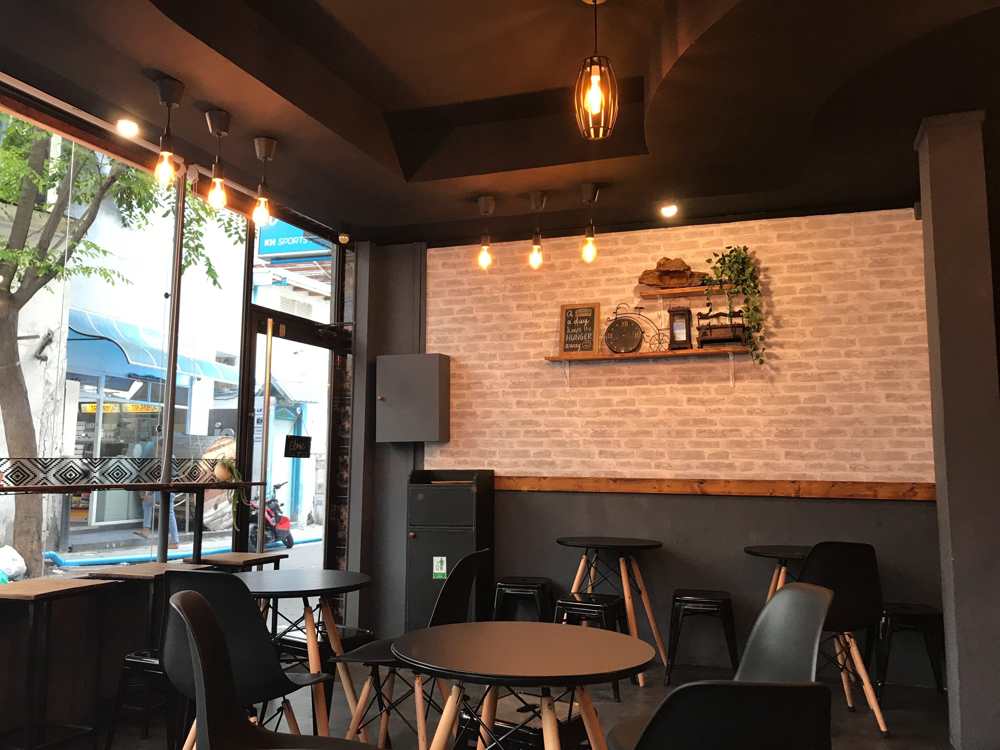

LOKACIJE
Pridružite nam se čak na tri različite lokacije širom beograda!
Dođite da zajedno uživano u neverovatnim ukusima domaće hrane!

Požeška 12

Vojvođanska 3

Za nas je hrana svečanost, uživanje, radost! Spoj tradicije i kvaliteta.
Naši kuvari nisu obični radnici, kuvari u onom podsmešljivom smislu reči.
Za nas je hrana svečanost, uživanje, radost! Spoj tradicije i kvaliteta.
O NAMASvakodnevno na adresu restorana Cezar stižu svež sir, kajmak, meso i suhomesnati proizvodi najboljeg kvaliteta. Peciva, proje, pite pripremaju se ručno, po tradicionalnim receptima, pa je doručak u Cezaru zadovoljstvo koje se ne propušta.
Vruća mlada jagnjetina, jaretina ili teletina ispod sača, uz krompir ispod sača, raznovrsne sezonske salate i domaći hleb je hedonistički trenutak koji se u Cezaru ne propušta.
O kolaču Tri leće restorana Cezaru se uveliko priča! Pored ove omiljene poslastice ne propustite da probate i kolač sa malinama, nugat tortu, krempitu, tiramisu, orasnice... Svi kolači se pripremaju u poslastičarnici restorana.
Pridružite nam se čak na tri različite lokacije širom beograda!
Dođite da zajedno uživano u neverovatnim ukusima domaće hrane!
Hrana, ambijent, osoblje sve je na mestu. Malo smo duže čekali, ali na kraju je vredelo. Mesto koje definitivno treba posetiti.

Jedan od mojih omiljenih restorana definitivno. Kvalitet i ukus hrane je prosto nepobediv. Necete se razočarati.